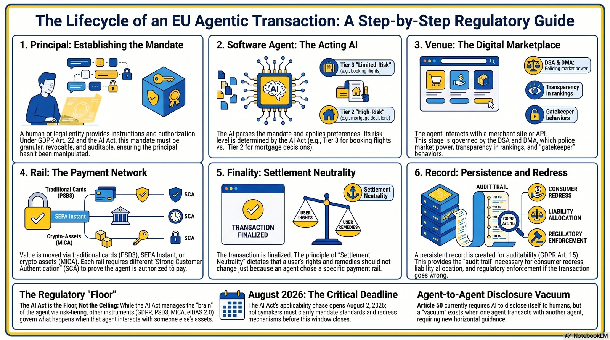

This morning in Madrid I watched two Zenodo DOIs go live. EN and FR. Forty-nine pages of analysis on a regulation that does not fully apply until 2 August 2026 — seventy-six days from now. By that date, the operating rules for agent-led commerce in Europe will be set. Most of them already are. I wrote the Field Report because the gaps are not being named clearly enough.
The paper is called Agentic Commerce in the EU: A Policymaker’s Guide. Independent. CC BY-SA 4.0. No paywall, no funder, no ask. It is what I would want sitting on my desk on a Monday morning if I were running an agentic commerce file inside the Commission, a national regulator, or a payment systems supervisor.
Six steps. Three gaps. One deadline.
The Field Report walks through what an agent must legally do, on behalf of a person, before it can purchase goods or services in the EU. Six steps: identity (eIDAS 2.0), authentication (PSD3 / Strong Customer Authentication), authorisation (GDPR Art. 22 mandate), transparency (AI Act Art. 50 disclosure), settlement (PSD3 / MiCA), recourse (DSA escalation path).
The transversals matter as much as the AI Act itself. The AI Act is the floor — the operational rules come from PSD3, eIDAS 2.0, GDPR, MiCA, DSA, DMA. Reading Art. 50 in isolation tells you what an agent must disclose. Reading it next to PSD3 Art. 7 (Strong Customer Authentication) tells you whether the agent can transact at all.
Three gaps emerge when you stack them together.
Mandate granularity. GDPR Art. 22 grants the right not to be subject to a decision based solely on automated processing. The AI Act does not specify how an agent records that a human has granted, scoped, or revoked a mandate to act on their behalf. Today this lives in supplier terms of service. Tomorrow, when one agent talks to another at €0.005 per transaction, there is no enforceable artefact of the user’s consent.
Cross-border liability. If a French user’s agent buys, on a German marketplace, a service rendered by an Estonian provider, and the service fails — which national authority has jurisdiction, which law applies, which court hears the dispute? The DSA gives an escalation path for content moderation. It does not give a settlement framework for €0.50 cross-border agent transactions.
The audit trail. The AI Act requires logging for high-risk systems. Agent commerce systems are not all high-risk under Annex III. But without logs that bind a transaction to an identity, a mandate, an authentication event, and a price — supervisors cannot prove harm, users cannot prove fraud, providers cannot defend themselves.

Why a Field Report, not a paper
I have written four academic papers on agentic commerce. The Field Report is something different — it is a tactical document, dated, with a deadline, written for an audience that needs to act in weeks not years. Field Reports sit between the long-arc research papers and the daily blog. This one is FR-EU-001 — the first in the series.
The format choice is deliberate. A policy paper reads as advocacy. A Field Report reads as briefing. I am not asking the Commission to adopt my framework. I am giving the people who already have to make decisions before August a structured way to see what they are being asked to decide.
It is also why the paper carries an explicit independence disclosure. No funder, no client, no commercial interest in any of the regulatory outcomes it describes. The work was written in EN and translated to FR with the same regulatory-terminology QA I apply to anything that touches EUR-Lex language. Both versions ship today.
What I’m asking for
If you work on this file at the Commission, ESMA, EBA, the EDPB, the AI Office, a national DPA, or a payment systems supervisor — read it, mark it up, send me what is wrong. If you are at a think tank, a law firm, or an industry association — use it, cite it, contradict it.
If you are a journalist covering the August deadline — there is a 12-minute video walkthrough, an 18-minute podcast episode, and the infographic above. All linked from the Field Report hub. All free. All in EN and FR.
The Field Report does not solve the three gaps. It names them and frames the design space around each. That is the most useful thing I can do seventy-six days out.
→ Read Field Report FR-EU-001 (EN)Agentic Commerce in the EU: A Policymaker’s Guide · 49 pp · Zenodo DOI 10.5281/zenodo.20265603 → Lire le Field Report FR-EU-001 (FR)
Le commerce agentique dans l’UE : guide du responsable politique · 38 pp · Zenodo DOI 10.5281/zenodo.20265854
Cheers from Madrid,
René